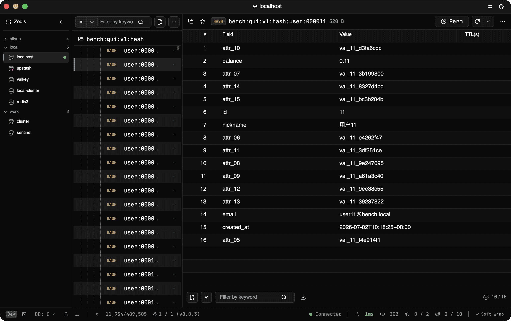

🦀
原生 & 快
虚拟滚动 SCAN、百万键树、跨平台浅色 / 深色 / 跟随系统。
使用 Rust 与 GPUI（与 Zed Editor 同款渲染引擎）打造。GPU 绘制界面、虚拟滚动 SCAN —— 百万级键也能保持低内存与 60+ FPS。

厌倦了客户端在大 key 上卡死、显示一个 JSON 就吃掉数 GB 内存、集群模式操作处处别扭、把压缩和二进制 value 显示成一堆乱码？我们也是。
每个像素在 GPU 上绘制，内存占用极低，浏览大库仍保持流畅。
JSON、Protobuf、MessagePack、压缩、图片、Hex —— 按类型与模块提供专用查看器。
环境标签、只读锁、破坏性操作升级确认、密钥加密 —— 纯本地、无遥测。
⌘K 命令面板、⌘P 最近键、带补全的 redis-cli 与 ? AI 命令助手、Batch 模式、跨服复制与对比。
开箱即用的核心能力。
虚拟滚动 SCAN、百万键树、跨平台浅色 / 深色 / 跟随系统。
自动解压 LZ4/Snappy/GZIP/ZSTD。JSONPath、Protobuf、时间戳、图片、自定义脚本。
位图、HLL、向量集 (KNN)、地理、概率结构、时间序列、Stream 实时跟踪、Pub/Sub（含分片）、RediSearch、Functions。
实时指标 + 7 天历史、内存分析（在线扫描或离线 RDB）+ AI 建议、慢日志 ↔ Latency、MONITOR、原始 INFO、按值搜索。
标签与备注仅存本地。TLS/SSH、ACL、分阶段诊断、按机器加密密钥。无账号、无遥测。
⌘K 面板、⌘P 最近键、⌘⇧F 多库搜索、redis-cli + ? AI 助手、Batch 模式、Lua 脚本库。
产品能力的浓缩地图。
| 🚀 原生 & 快 | GPU 渲染 · 虚拟 SCAN · 多平台 · 浅色 / 深色 / 跟随系统 |
|---|---|
| 🧠 数据查看 | 压缩 · JSON/JSONPath · Protobuf · MessagePack · 时间戳 · 图片 · Hex · 脚本 |
| 🗂️ 类型 & 模块 | 位图 · HLL · 向量 · 地理 · 概率型 · 时间序列 · Streams · Pub/Sub（分片）· Search · Functions |
| 📊 可观测 | 指标历史 · 内存（在线 / 离线 RDB）· 慢日志 · MONITOR · 原始 INFO · 集群 · 持久化 · 键事件 |
| 🔑 Keys & 数据 | 命名空间树 · 标签/备注 · 批量导出（Tools、前缀过滤、二进制 / JSON / CSV）· 回收站 · 跨服复制与对比 |
| 🔐 安全 | 环境标签 · 只读 · ACL · TLS/SSH · 诊断 · 密钥加密 · 导入 Insight / ARDM / Tiny RDM |
| ⌨️ 效率 | ⌘K · ⌘P · ⌘⇧F · CLI + ? AI · Batch · Lua 库 · 更新 · 日志 |
推荐包管理器，或直接下载发布包。
brew install --cask zedis
scoop bucket add extras && scoop install zedis
yay -S zedis-bin
cargo install --git https://github.com/vicanso/zedis --locked zedis-gui
crates.io 版本可能滞后（GPUI 为 git 依赖）。最新版请用 Homebrew / Scoop / AUR 或 GitHub Releases。
Zedis 基于 Apache License 2.0 开源。欢迎提 Issue 与 PR —— 提交贡献即表示同意项目的 CLA。